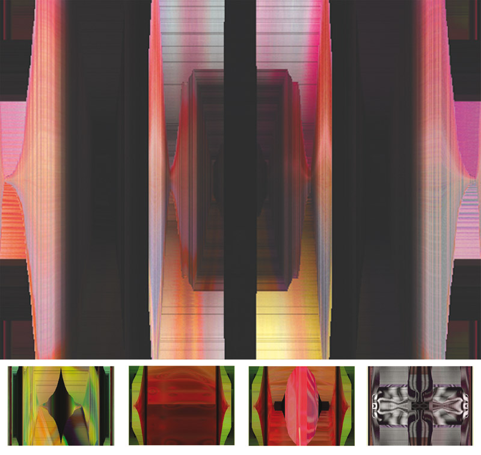

Sistemas autopoieticos · Arte generativo
Exploración audiovisual basada en sistemas generativos que simulan comportamientos emergentes inspirados en procesos biológicos y autopoieticos.
métodoentropía1 es un proyecto audiovisual basado en sistemas generativos que exploran comportamientos emergentes inspirados en procesos biológicos y teorías de sistemas autopoieticos.
La obra propone un entorno visual en constante transformación donde formas, estructuras y movimientos surgen a partir de reglas algorítmicas que simulan dinámicas de autoorganización.
El proyecto permite abordar conceptos fundamentales del arte generativo, como la creación basada en reglas, la emergencia de formas complejas a partir de sistemas simples y la relación entre programación, visualización y comportamiento dinámico.
También funciona como referencia para estudiar cruces entre arte digital, ciencia de sistemas y simulación computacional.
El trabajo del colectivo LAZO se sitúa en la intersección entre arte, tecnología y pensamiento sistémico. En este contexto, Método Entropía investiga la posibilidad de generar estructuras visuales autónomas que evolucionan a partir de principios de organización interna.
La obra se relaciona con prácticas contemporáneas de arte generativo que exploran procesos de autoorganización y comportamientos emergentes dentro de sistemas computacionales.